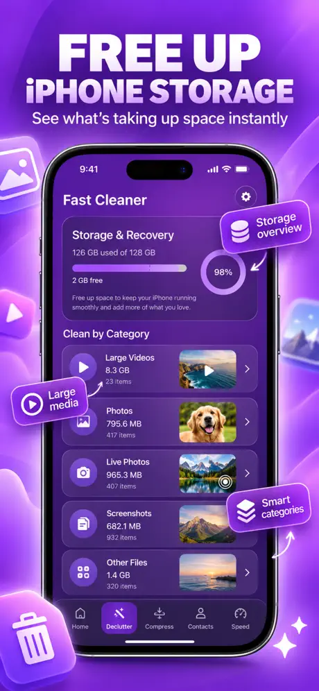
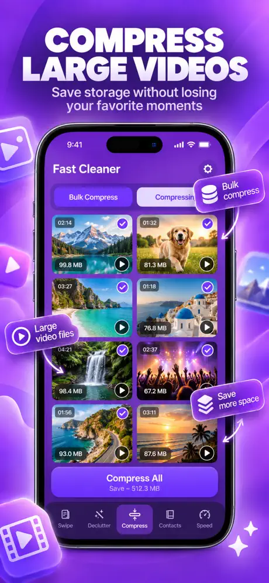

If your phone still meets your needs but keeps running out of space, try a storage cleanup before replacing it. Removing unwanted photos and videos may postpone a purchase driven mainly by capacity. The benefit depends on how much removable content you actually have.
Start with the storage tools already on your phone. A dedicated app can help group media for review, but it is one option alongside manual cleanup, archiving, and cloud storage. The useful question is which choice solves your problem at a cost you are comfortable with.
- Cleanup can recover storage; it cannot add RAM, upgrade your processor, or repair your battery.
- A postponed phone purchase is deferred spending, not automatically a permanent saving.
- Deleting local files does not necessarily reduce your cloud bill.
- Compare the cost of any paid cleaner with the alternatives, including built-in tools.
Why memory costs make this a timely question
Component costs are a reason to think carefully about replacement. In its September 30, 2026 memory-market outlook, TrendForce projected fourth-quarter contract-price increases, compared with the previous quarter, of 10% to 15% for conventional DRAM and 15% to 20% for NAND flash. DRAM is working memory; NAND flash provides persistent storage. It also described pressure on smartphone production from mobile-memory costs.
These are market forecasts for components, not a measured price increase for every phone in a shop. TrendForce’s November 6 update on smartphone memory sourcing provides more recent context on manufacturers responding to high DRAM prices. Neither report establishes how much an individual reader could save through cleanup.
Fast Cleaner’s practical role is narrower: helping you review unwanted media so a storage warning does not become an automatic reason to shop.
First, find out what is actually full
Check device storage and cloud storage separately. Apple’s guide to iCloud storage and device storage explains that they are different capacities. Buying cloud space does not increase the physical capacity built into your phone.
Storage also differs from working memory. Google distinguishes space used for files from memory used to run apps and the system. Removing videos changes file storage. It does not increase installed RAM or turn the processor into a newer chip.
Review these categories before paying for more capacity
Start with content you no longer want, then reassess the warning. Check important backups before deleting, and review the actual files rather than accepting every suggestion.
Duplicate and similar photos
Keep the versions you prefer. Similar shots may capture different expressions or text, so review them individually.
Review duplicate photos →Old screenshots
Check tickets, receipts, and work details before removing forgotten captures. Some screenshots are records worth keeping.
Review screenshot cleanup →Large videos
Delete unwanted recordings or try compression. Compare the output before removing an original you value.
Explore video compression →Downloads and unused apps
Use your system’s storage tools to review downloaded media and apps you no longer need. A photo cleaner is not a replacement for those controls.
See more storage options →Then check your available storage again and try the task that was blocked. Can you save a recording or download what you need? If yes, that is a concrete result. It does not establish that cleanup has repaired every performance issue.

Find categories to review
Compare video optionsInteractive guide: what should you try first?
Choose the problem you are trying to solve. This guide explains an option to investigate; it does not inspect your phone or diagnose its hardware.
Your choice stays in this page’s memory. It is not saved or sent anywhere.
Where cleanup might help you spend less
Separate a lower bill from a purchase you delay. If removing clutter lets you keep using your current phone, you may postpone replacement. You have not necessarily avoided that expense forever, and future prices or trade-in values may change.
A smaller cloud bill requires another step: your stored content must fit the lower plan and you must actually change your subscription. Removing device copies alone does not accomplish that. Google Photos’ Free up space on your device feature, for example, removes local copies of backed-up media while keeping the cloud copies.
If you use iCloud Photos, understand synced deletion before removing media. Apple’s iCloud storage-management guide explains that deleting a synced photo on one device can remove it across your other connected devices. Preserve important files separately before reducing your library.
Compare a possible cloud-plan change
Use your actual prices in one currency. Include the cleaner’s total cost over the same period, whether it is a one-time purchase or a subscription. Enter zero if you use only free tools.
Your comparison
Enter your prices to compare the same period.
Calculation: (current monthly price − proposed monthly price) × months − total cleaner cost. Use tax-inclusive prices for a consistent comparison. A lower calculated cost becomes a real saving only if you can use the lower plan and actually change it. This tool does not measure storage or recommend a subscription.
When cleanup will not solve the problem
Keep hardware, battery, and software requirements in the decision. If your essential content repeatedly fills the phone after sensible cleanup, you may need an archive, a suitable cloud service, or more device capacity. Compare how often you need those files offline.
For slowness, check the cause before assuming it is storage. Apple’s performance troubleshooting guide covers network conditions, available space, temperature, and battery health. A battery that needs service is a different problem from a full photo library.
Replacement may also make sense when the device no longer supports the software you need, cannot perform essential tasks, or has damage that is not economical to repair. A cleaner cannot supply missing hardware features or extend a manufacturer’s software support.
Where Fast Cleaner can help
Fast Cleaner helps you find duplicate and similar photos, review screenshots, and compress videos. The benefit is making unwanted media easier to review so you can decide what to keep. Storage recovery depends on your library, and feature availability varies by platform and permissions.
Our privacy policy describes on-device media analysis and separate, limited analytics and diagnostics. Before installing a cleaner, read its policy and checkout terms. Our photo cleaner safety guide provides a checklist you can apply to Fast Cleaner or another app.
Try your device’s built-in options first if they meet your needs. If you choose a paid workflow, include its actual cost in the comparison above. Fast Cleaner publishes this article; it is not an independent review of cleanup apps.
Questions before you replace your phone
Will cleanup make my old phone as fast as a new one?
No. It can address a storage shortage, but it does not change the processor, installed RAM, battery condition, or software support. Investigate performance problems separately.
Will I automatically pay less for iCloud or Google storage?
No. You need to check cloud usage separately, determine whether a smaller plan meets your needs, and change the subscription. Deleting local copies may leave cloud usage unchanged.
How much storage or money will I save?
That depends on the files you choose to remove, any compression results, and the spending decision you change. Measure recovered space on your phone. Use your own costs rather than treating a sample result as a promise.
Is cleanup still useful if I eventually upgrade?
Yes, reviewing unwanted content can help you decide what to keep or transfer. Whether that changes your spending depends on the device and storage plan you choose.
Review the clutter.
Then decide what you need.
Explore Fast Cleaner’s on-device photo cleanup and video tools before making a storage-driven upgrade.
No fixed storage or financial savings are promised. Check platform features and current purchase terms.
Sources checked November 10, 2026. Market forecasts are identified by publication date and linked beside the claims they support. Platform guidance comes from Apple and Google. Product descriptions reflect Fast Cleaner’s own website and policy; no industry source endorses this app.